Ausgabe vom 17. August 2026
Alle Meldungen
Netz & Technik
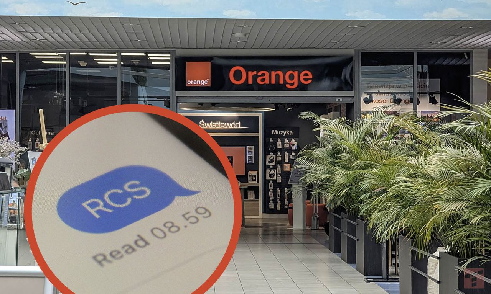
Orange startet eigenen RCS-Nachrichtendienst im OktoberTarife & Angebote
 O2 UK lockt mit bis zu 1.525 Pfund Pixel-11-Rabatt
O2 UK lockt mit bis zu 1.525 Pfund Pixel-11-Rabatt
Satellit & Direct-to-Cell
 Starlink-Direktdienst geht in SADC-Land live
Starlink-Direktdienst geht in SADC-Land live
Regulierung & Politik
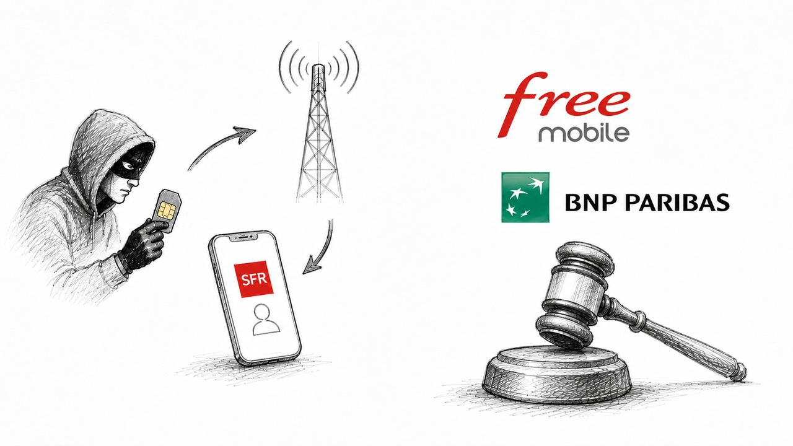
Gericht verurteilt Free Mobile wegen SIM-Swap-Betrug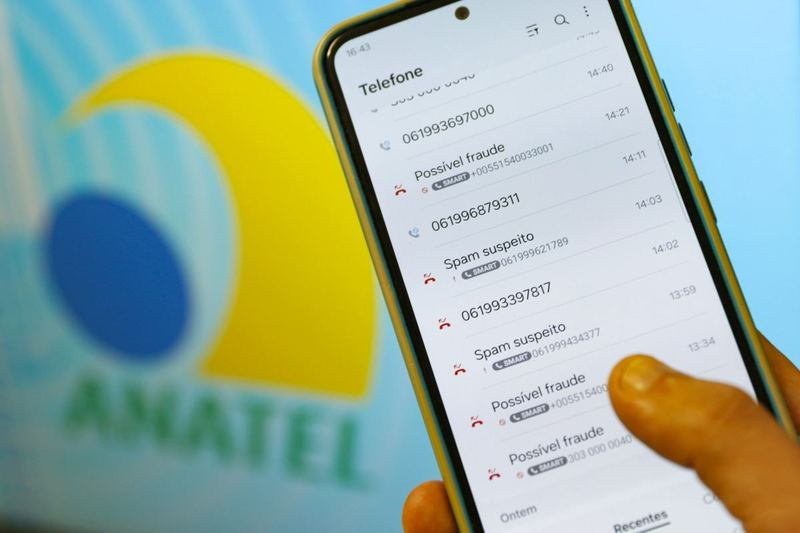
Brasilien regelt Blockade von MassenanrufenGeld & Übernahmen
 Vero steigert Mobilfunkkunden um 66 Prozent
Vero steigert Mobilfunkkunden um 66 Prozent
Partnerschaften
 Netia bündelt Canal+ Sport mit Internet-Tarifen
Netia bündelt Canal+ Sport mit Internet-Tarifen
 MyBundle und Gigs bringen Mobilfunk-Angebot für Internetanbieter
MyBundle und Gigs bringen Mobilfunk-Angebot für Internetanbieter
Vermischtes
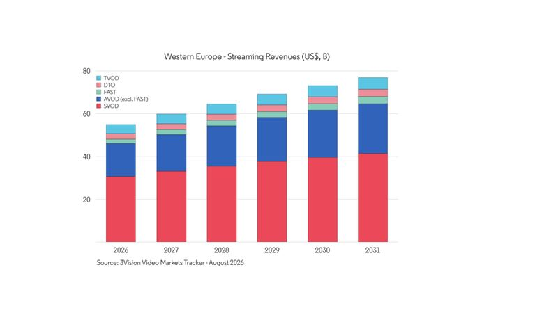
Streaming-Umsatz in Westeuropa waechst dank Werbung staerker als Abos
Netz & Technik
88 Meldungen

 Europas Betreiber beschleunigen Abschaltung von 2G und 3G
Europas Betreiber beschleunigen Abschaltung von 2G und 3G
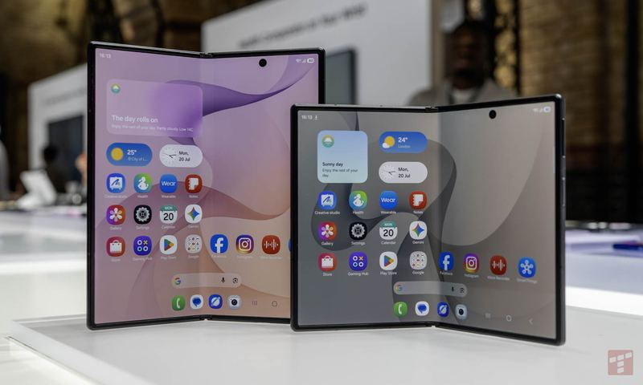
Samsung plant fünf faltbare Smartphones für 2027Auch berichtet von TeleSíntese (BR), TELETIME (Brasilien)
 Studie zweifelt an SpaceX-Plan für Mobilfunk-Kleinzellen
Studie zweifelt an SpaceX-Plan für Mobilfunk-Kleinzellen
 Experte: Nicht Network Slicing macht 5G SA wertvoll
Experte: Nicht Network Slicing macht 5G SA wertvoll
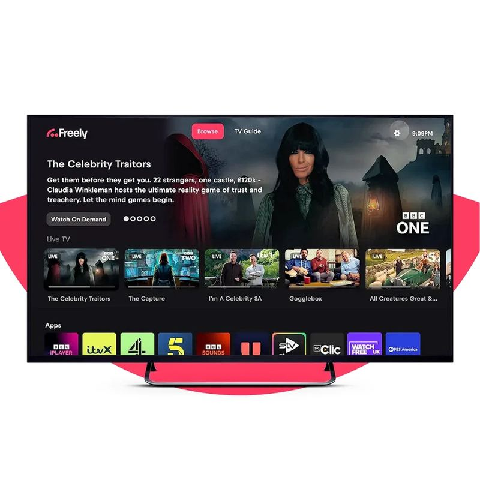
Grosser Ausfall bei UK-Streaming-TV-Dienst FreelyAuch berichtet von Univers Freebox
Auch berichtet von Developing Telecoms
 Telekom-Manager warnen: KI-Standardnutzen reicht nicht mehr
Telekom-Manager warnen: KI-Standardnutzen reicht nicht mehr
 Telefonica nutzt KI zur Kundenzufriedenheit bei Grosskunden
Telefonica nutzt KI zur Kundenzufriedenheit bei Grosskunden
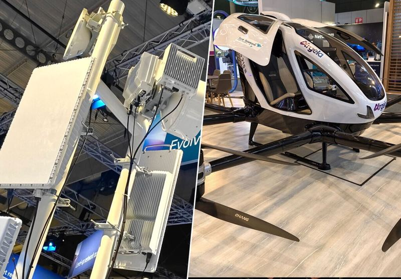
5G-Netze als Drohnen-Radar im Feldtest Telkos wiegen Risiko von Glasfaser-Ausbau fuer KI-Rechenzentren ab
Telkos wiegen Risiko von Glasfaser-Ausbau fuer KI-Rechenzentren ab
 Glasfaser-Ausbau in Westafrika beschleunigt sich ungleichmaessig
Glasfaser-Ausbau in Westafrika beschleunigt sich ungleichmaessig
Auch berichtet von TeleSemana (LatAm)
 Seekabel-Betreiber FLAG setzt auf Partnerschaften statt Alleingang
Seekabel-Betreiber FLAG setzt auf Partnerschaften statt Alleingang
 Kongo plant 10-Jahres-Strategie fuer geteilte Netzinfrastruktur
Kongo plant 10-Jahres-Strategie fuer geteilte Netzinfrastruktur
 Helium sieht SpaceX-Mobilfunkstrategie als Bestätigung
Helium sieht SpaceX-Mobilfunkstrategie als Bestätigung
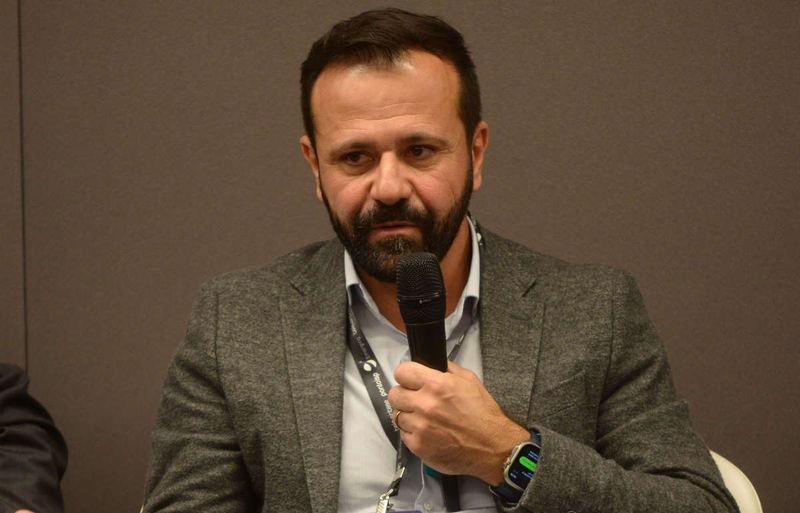
TIM beschraenkt Zugriffsrechte von KI-Agenten im Unternehmen Open RAN wird laut Dell'Oro nur noch zum Standard
Open RAN wird laut Dell'Oro nur noch zum Standard
 Private Netze bei Versorgern werden zunehmend Angriffsziel
Private Netze bei Versorgern werden zunehmend Angriffsziel
 Nigerias Glasfaser-Programm Project Bridge startet Umsetzung
Nigerias Glasfaser-Programm Project Bridge startet Umsetzung
Auch berichtet von Developing Telecoms
 MasOrange zögert bei Huawei-Ausstieg zugunsten Ericsson
MasOrange zögert bei Huawei-Ausstieg zugunsten Ericsson
 Nvidia stellt neue Stromarchitektur für KI-Fabriken vor
Nvidia stellt neue Stromarchitektur für KI-Fabriken vor
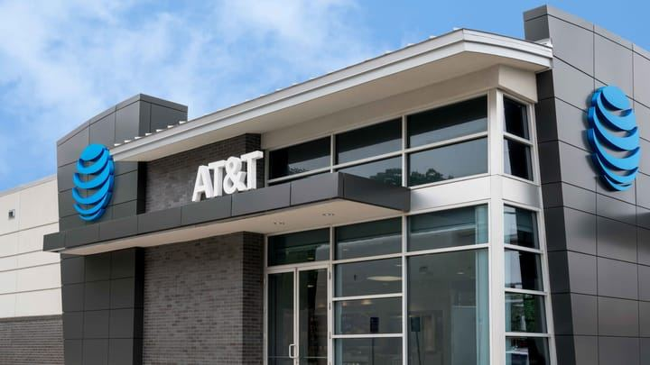
AT&T baut Neutral-Host-Netz im Football-Stadion Solarprojekt soll Stromausfälle in Sierra Leone lindern
Solarprojekt soll Stromausfälle in Sierra Leone lindern
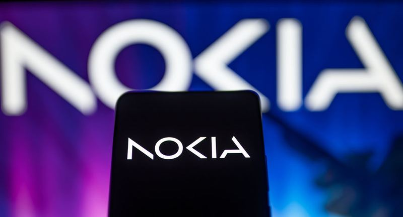
Nokia baut US-Chipfabrik fuer KI-Optikchips aus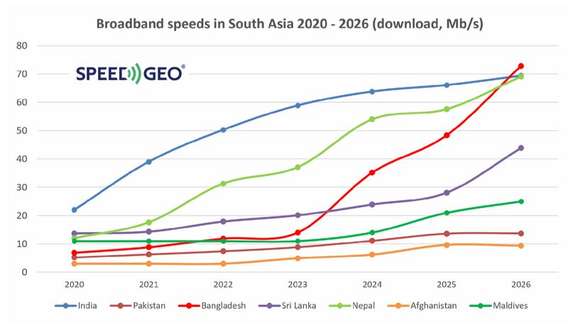
Indien führt bei Mobilfunkgeschwindigkeit in Südasien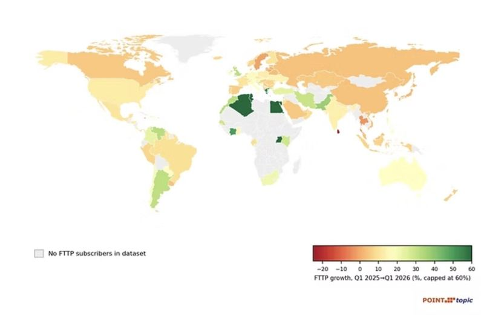
Glasfaser knackt weltweit 74 Prozent Marktanteil Samsung entwickelt KI-Modelle für Gesundheitsdaten aus Wearables
Samsung entwickelt KI-Modelle für Gesundheitsdaten aus Wearables
 Iliad-Tochter Scaleway verstärkt Präsenz am Internetknoten Nine
Iliad-Tochter Scaleway verstärkt Präsenz am Internetknoten Nine
 Anthropic markiert KI-generierten Text mit Wasserzeichen
Anthropic markiert KI-generierten Text mit Wasserzeichen
Auch berichtet von du
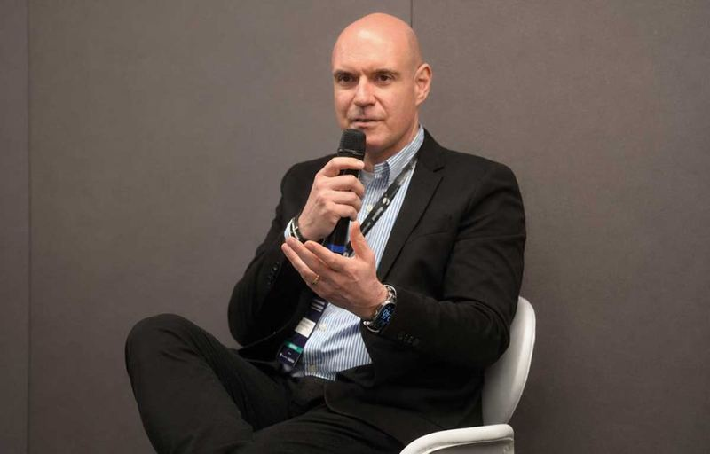
KPMG fordert Onboarding-Prozess fuer KI-Agenten in Firmen Dell'Oro erwartet Rechenzentrums-Chipmarkt von 1,8 Billionen Dollar
Dell'Oro erwartet Rechenzentrums-Chipmarkt von 1,8 Billionen Dollar
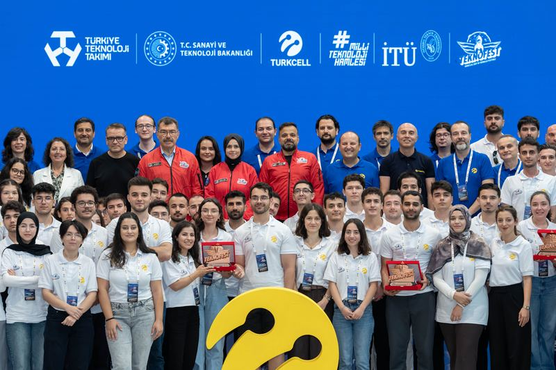
Turkcell zeigt 5G- und KI-Loesungen fuer Strassensicherheit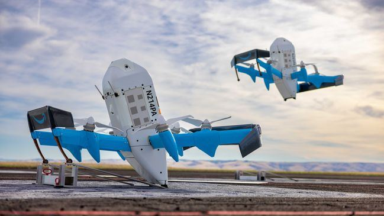
Amazon startet Drohnenlieferung in Nordengland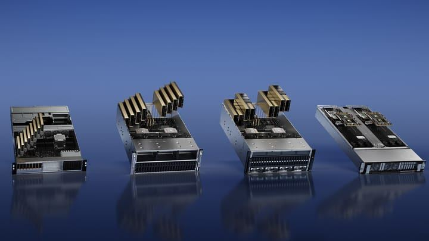
Meinungsbeitrag zweifelt an Durchbruch von KI-gesteuertem Funknetz
Tarife & Angebote
73 Meldungen

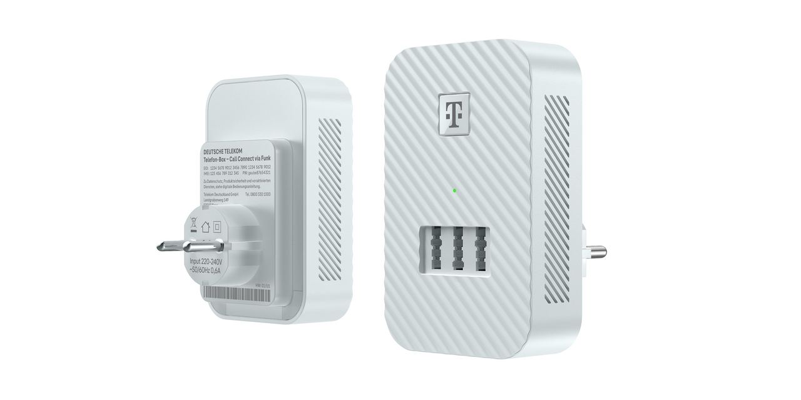
Telekom bringt Funk-Box für alte Telefonanschlüsse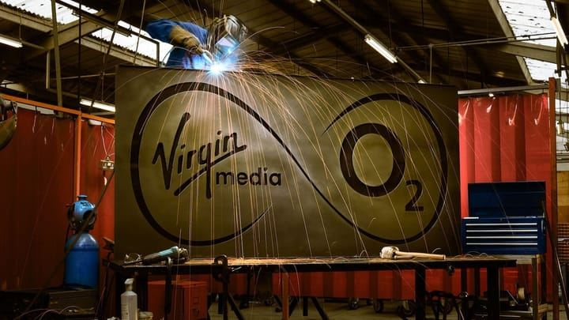
Virgin Media O2 will 500.000 arme Haushalte ans Netz bringenAuch berichtet von Virgin Media O2
 Virgin Media O2 fuegt Tennis-Sender kostenlos ins TV-Paket
Virgin Media O2 fuegt Tennis-Sender kostenlos ins TV-Paket
 A1 lockt mit 400 Euro Eintauschbonus für Pixel 11
A1 lockt mit 400 Euro Eintauschbonus für Pixel 11
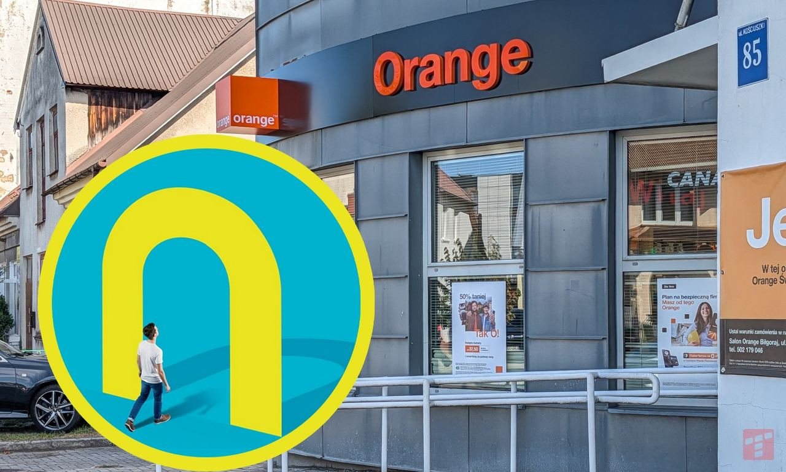
Orange bietet doppelte Glasfaser-Geschwindigkeit zum gleichen Preis Bouygues verramscht PS5 und Xbox bei Bbox-Gaming-Tarif
Bouygues verramscht PS5 und Xbox bei Bbox-Gaming-Tarif
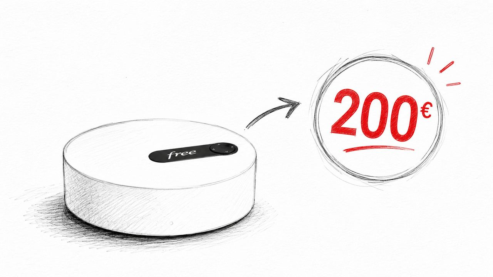
Free lockt mit bis zu 200 Euro Wechselbonus Roaming-eSIMs beliebt, aber Qualität schwankt stark
Roaming-eSIMs beliebt, aber Qualität schwankt stark
 Alares bündelt Universal+ und Sony One im neuen Streaming-Paket
Alares bündelt Universal+ und Sony One im neuen Streaming-Paket
 Free begrenzt Geräteanzahl für TV-Konto und Account-Sharing
Free begrenzt Geräteanzahl für TV-Konto und Account-Sharing
 Ligga verkauft Mobilfunktarife ohne Fixnetz-Bindung
Ligga verkauft Mobilfunktarife ohne Fixnetz-Bindung
 Canal+ erhoeht Jubilaeums-Abo von 40 auf 42 Euro
Canal+ erhoeht Jubilaeums-Abo von 40 auf 42 Euro
Auch berichtet von Google Pixel
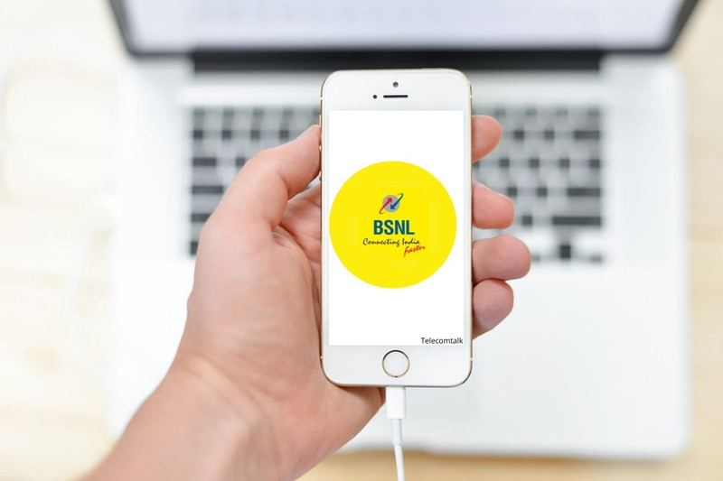
BSNL schenkt Prepaid-Kunden 47 Tage extra Laufzeit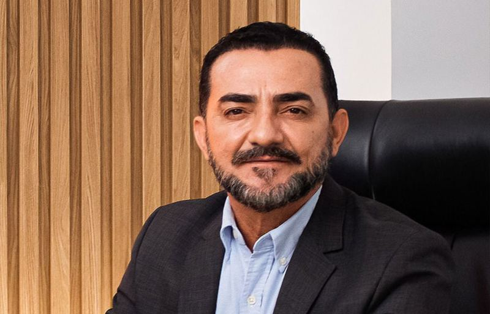
Brisanet kaempft mit Markenbekanntheit im Mobilfunk TP-Link bringt drei neue SIM-Karten-Router für Zuhause
TP-Link bringt drei neue SIM-Karten-Router für Zuhause
Auch berichtet von TelecomTalk
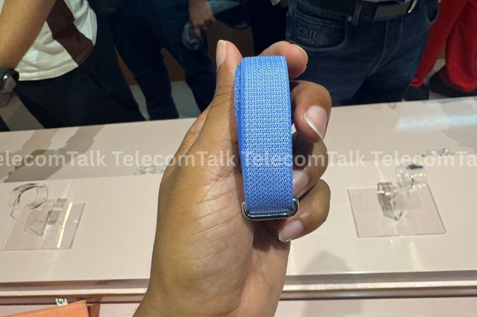
Google bringt bildschirmloses Fitbit Air nach IndienAuch berichtet von Mobile World Live, Google Pixel
 Free bietet feste IPv4-Adresse für Freebox-Nutzer
Free bietet feste IPv4-Adresse für Freebox-Nutzer
Auch berichtet von Light Reading, Telefónica
 Samsung zeigt Kamera-Fähigkeiten der neuen Z-Falt-Serie
AT&T startet EdgeVis Cloud für optimiertes Live-Video
Samsung zeigt Kamera-Fähigkeiten der neuen Z-Falt-Serie
AT&T startet EdgeVis Cloud für optimiertes Live-Video
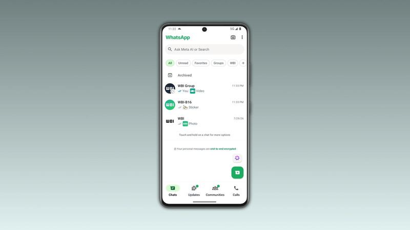
WhatsApp testet Bildvorschau in der Chat-Liste Auerswald bringt neues DECT-Mobilteil für Firmen
Auerswald bringt neues DECT-Mobilteil für Firmen
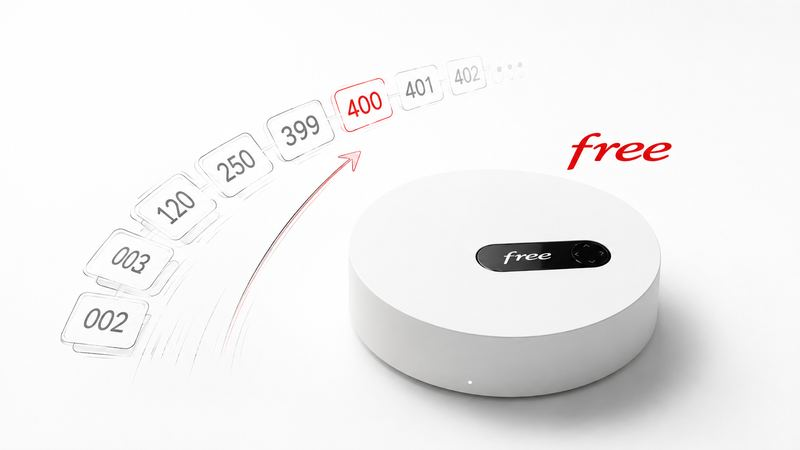
Free ordnet TV-Programmplätze komplett neu Nvidia bringt schnelleres Modell für KI-Agenten
Nvidia bringt schnelleres Modell für KI-Agenten
Satellit & Direct-to-Cell
30 Meldungen
 US-Anbieter startet Gegen-Kampagne gegen Starlink
US-Anbieter startet Gegen-Kampagne gegen Starlink
 Europäisches Satelliten-Projekt Iris² rückt näher
Europäisches Satelliten-Projekt Iris² rückt näher
 Studie: Satelliten können Mobilfunknetze nicht ersetzen
Studie: Satelliten können Mobilfunknetze nicht ersetzen
 Celona buendelt privates 5G, WLAN und Satellit fuer Firmen
Celona buendelt privates 5G, WLAN und Satellit fuer Firmen
Auch berichtet von The Fast Mode
Auch berichtet von Fierce Network
 AST SpaceMobile wächst trotz höherer Verluste weiter
AST SpaceMobile wächst trotz höherer Verluste weiter
 EU stockt Satellitenprogramm IRIS2 für Krisenkommunikation auf
EU stockt Satellitenprogramm IRIS2 für Krisenkommunikation auf
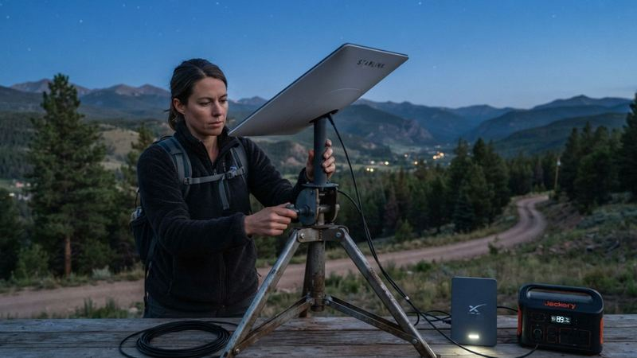
Starlink-Nutzer verdreifachen Geschwindigkeit durch KabeltauschAuch berichtet von Light Reading
 Chiphersteller GCT entwickelt Hybrid-Satelliten-5G-Chips
Chiphersteller GCT entwickelt Hybrid-Satelliten-5G-Chips
Auch berichtet von Fierce Network
Regulierung & Politik
60 Meldungen
Auch berichtet von TELETIME (Brasilien)

 Neue EU-Batterieverordnung bringt Kennzeichnungspflichten für Händler
Neue EU-Batterieverordnung bringt Kennzeichnungspflichten für Händler
 Algerien fordert Sperre ausländischer WhatsApp-Konten
Algerien fordert Sperre ausländischer WhatsApp-Konten
Auch berichtet von Developing Telecoms
 Vodafone fordert einfachere EU-Regulierung
Vodafone fordert einfachere EU-Regulierung
 e& und du erhalten neue 20-Jahres-Lizenzen
e& und du erhalten neue 20-Jahres-Lizenzen
 Südafrikas TV-Digitalumstellung bleibt ohne Termin
Südafrikas TV-Digitalumstellung bleibt ohne Termin
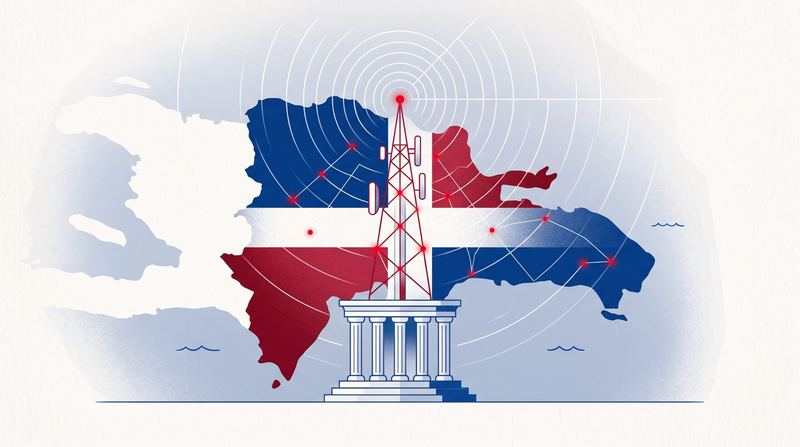
Dominikanische Republik plant neues Telekomgesetz ohne Plattform-Regulierung Anthropic kennzeichnet KI-Texte gemäß EU-KI-Gesetz
Anthropic kennzeichnet KI-Texte gemäß EU-KI-Gesetz
 Bitkom-Umfrage fordert Verbot von KI-Entkleidungs-Apps
Bitkom-Umfrage fordert Verbot von KI-Entkleidungs-Apps
Auch berichtet von Light Reading, TelecomLead (Indien)
Auch berichtet von TeleSíntese (BR)
Auch berichtet von TeleSíntese (BR)
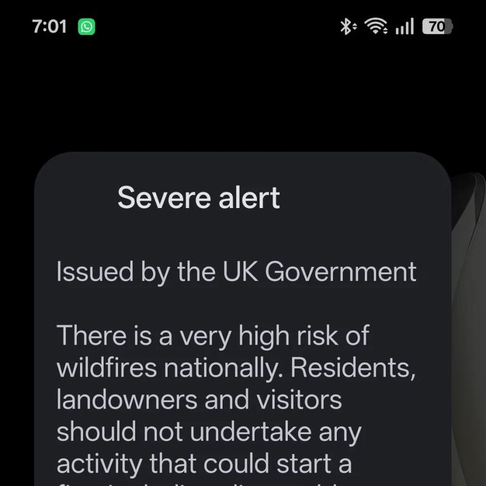
Grossbritannien sendet Waldbrand-Notfallalarm per Mobilfunk Liberia digitalisiert Telekom-Lizenzvergabe
Liberia digitalisiert Telekom-Lizenzvergabe
Auch berichtet von Telecom Review Africa
Auch berichtet von The Fast Mode, VEON
 Canal+ erwirkt Sperrungen bei französischen Providern
Canal+ erwirkt Sperrungen bei französischen Providern
 US-Regulierer setzt Termin fuer C-Band-Frequenzauktion
US-Regulierer setzt Termin fuer C-Band-Frequenzauktion
 USAID-Rückzug gefährdet globale Konnektivitätsförderung
USAID-Rückzug gefährdet globale Konnektivitätsförderung
Geld & Übernahmen
50 Meldungen


Auch berichtet von Mobile World Live
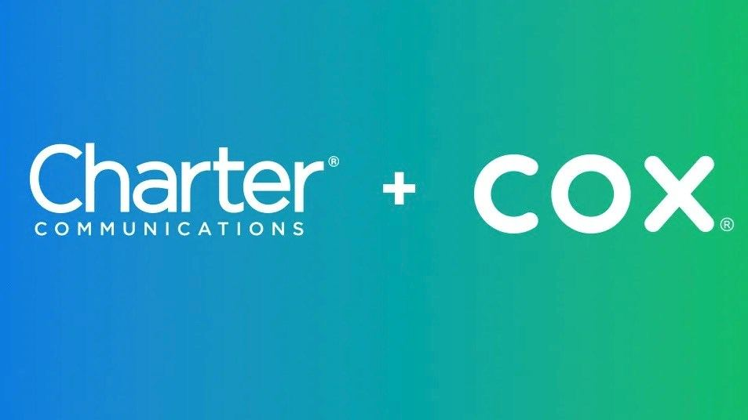
Deutsche Telekom kauft polnischen Festnetzanbieter für 1 Milliarde EuroAuch berichtet von Light Reading, Deutsche Telekom
 Deutsche Telekom kauft polnische Glasfaseranbieter für 1 Milliarde Euro
Deutsche Telekom kauft polnische Glasfaseranbieter für 1 Milliarde Euro
 TalkTalk verkauft Wholesale-Sparte an Octopus Investments
TalkTalk verkauft Wholesale-Sparte an Octopus Investments
 Freenet bestaetigt Prognose nach Umsatzplus im Halbjahr
Freenet bestaetigt Prognose nach Umsatzplus im Halbjahr
 TalkTalk Business schliesst Fusionsdeal ab
TalkTalk Business schliesst Fusionsdeal ab
Auch berichtet von Telecoms.com, Mobile Europe
Auch berichtet von Light Reading
 Widerstand gegen KI-Rechenzentren kostet Big Tech Milliarden
Widerstand gegen KI-Rechenzentren kostet Big Tech Milliarden
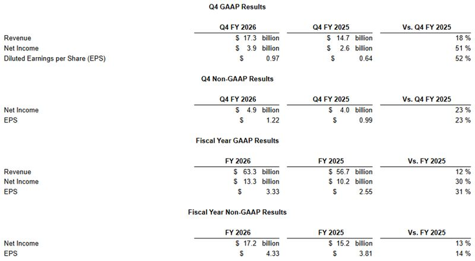
Cisco meldet Rekordumsatz mit starkem EMEA-Wachstum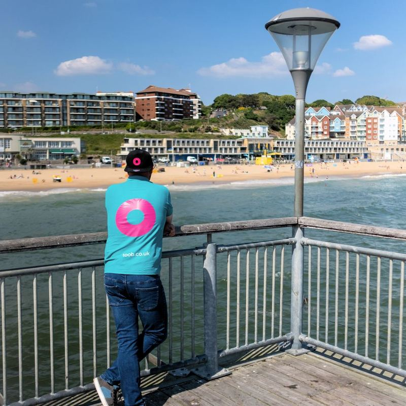
Investor stoppt weitere Finanzierung für UK-Altnet Toob Anthropic plant Börsengang mit 200-Milliarden-Umsatzprognose
Anthropic plant Börsengang mit 200-Milliarden-Umsatzprognose
Auch berichtet von TechCentral (Südafrika)
Auch berichtet von Capacity Media
Auch berichtet von TeleSíntese (BR)
Auch berichtet von Fierce Network
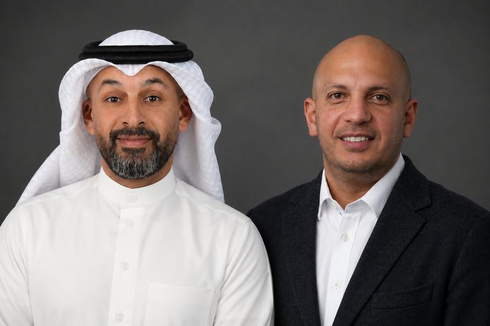
Beyon Money wächst am schnellsten bei Firmenkarten in Bahrain
Partnerschaften
34 Meldungen
 Vodafone Business kooperiert mit TCS im UK
Vodafone Business kooperiert mit TCS im UK
Auch berichtet von Mobile Europe, Vodafone UK
 Vodafone Business kooperiert mit TCS für UK-Firmenkunden
Vodafone Business kooperiert mit TCS für UK-Firmenkunden
 IBM und OpenAI wollen sichere Firmen-KI beschleunigen
IBM und OpenAI wollen sichere Firmen-KI beschleunigen
 Telesign und Bancontact bekämpfen Echtzeit-Zahlungsbetrug
Telesign und Bancontact bekämpfen Echtzeit-Zahlungsbetrug
 Claro startet eigene Unternehmens-Cloud mit Oracle
Claro startet eigene Unternehmens-Cloud mit Oracle
 Vodafone übernimmt Telenors internationale Sprachdienste
Vodafone übernimmt Telenors internationale Sprachdienste
Auch berichtet von Mobile Europe, Mobile World Live
 Vodafone-Einkaufsarm schliesst Sprachdienst-Deal mit Telenor
Vodafone-Einkaufsarm schliesst Sprachdienst-Deal mit Telenor
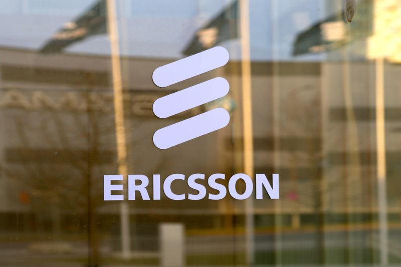
Zain Jordan modernisiert Abrechnungssystem mit EricssonAuch berichtet von Telecoms.com, Developing Telecoms
 IBM und OpenAI kooperieren bei Unternehmens-KI
IBM und OpenAI kooperieren bei Unternehmens-KI
 Lenovo und EdgeNet bauen lokale KI-Rechenzentren in Mexiko
Lenovo und EdgeNet bauen lokale KI-Rechenzentren in Mexiko
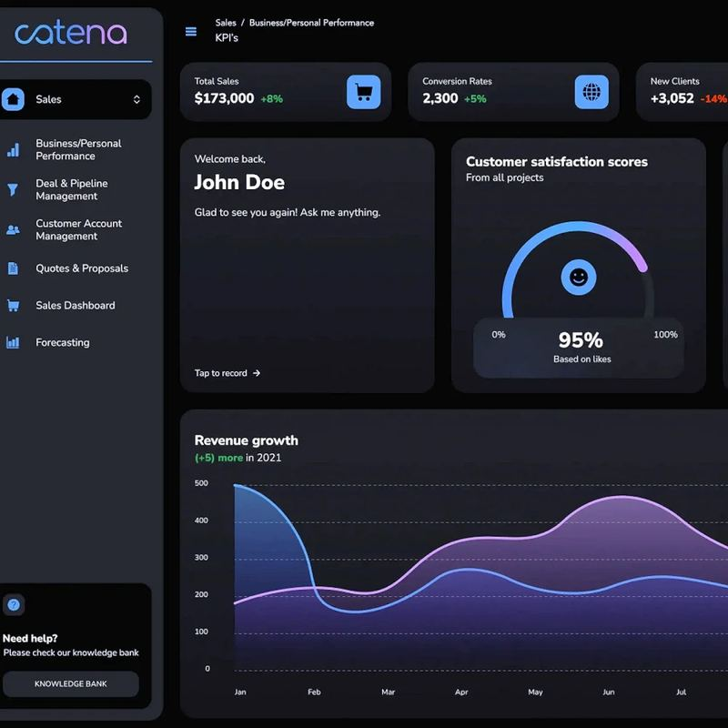
Britischer ISP Olilo setzt auf neue Cloud-Abrechnungsplattform RT-One nutzt AMPHIX-Plattform für KI-Infrastruktur in Amerika
RT-One nutzt AMPHIX-Plattform für KI-Infrastruktur in Amerika
 Ingram Micro erweitert Collaboration-Angebot um Dten
Ingram Micro erweitert Collaboration-Angebot um Dten
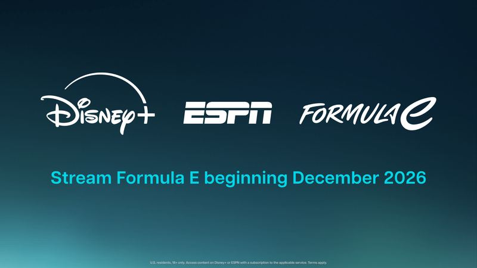
Disney+ übernimmt Streaming-Rechte an der Formel E
Vermischtes
45 Meldungen
 iPhone-Nutzer geben 40 Prozent mehr fuer Microdrama-Apps aus
iPhone-Nutzer geben 40 Prozent mehr fuer Microdrama-Apps aus
 Free kündigt TV-Umbau und Rentrée-Angebot an
Free kündigt TV-Umbau und Rentrée-Angebot an
Auch berichtet von TelecomLead (Indien)
 Smartphone-Auslieferungen sinken um 7 Prozent
Smartphone-Auslieferungen sinken um 7 Prozent
Auch berichtet von GSMA
 Kearney-Index sieht Nahost-Telekomfirmen fit, Europa schwach
Kearney-Index sieht Nahost-Telekomfirmen fit, Europa schwach
Auch berichtet von TelecomLead (Indien)
Auch berichtet von Broadband TV News
 Wearable-Absatz sinkt, einfache Tracker im Aufwind
Wearable-Absatz sinkt, einfache Tracker im Aufwind
 Smartwatch-Verkäufe steigen, Fitness-Tracker schwächeln
Smartwatch-Verkäufe steigen, Fitness-Tracker schwächeln
 Wearable-Absaetze sinken, Sport- und Basismodelle legen zu
Wearable-Absaetze sinken, Sport- und Basismodelle legen zu
Auch berichtet von Developing Telecoms, The Fast Mode, MTN Group
Auch berichtet von Total Telecom
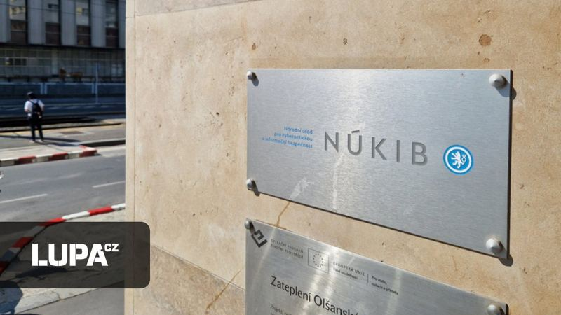
Angreifer dringen in tschechische Behörden-IT ein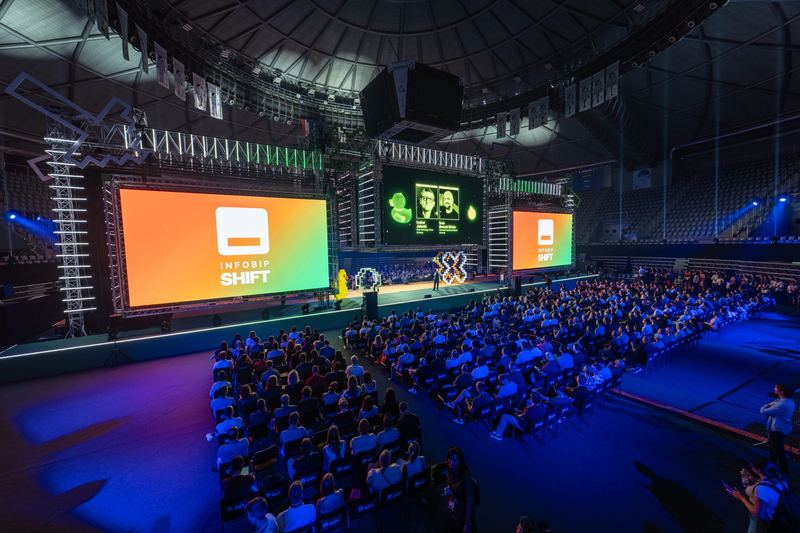
OpenAI spricht erstmals auf Infobip-Konferenz ShiftFrühere Ausgaben
17. August 2026
897 neue Meldungen
15. August 2026
810 neue Meldungen
14. August 2026
944 neue Meldungen
8. August 2026
256 neue Meldungen
7. August 2026
381 neue Meldungen
6. August 2026
642 neue Meldungen
5. August 2026
426 neue Meldungen
4. August 2026
124 neue Meldungen
31. Juli 2026
220 neue Meldungen
28. Juli 2026
9 neue Meldungen
27. Juli 2026
49 neue Meldungen
26. Juli 2026
4 neue Meldungen
25. Juli 2026
11 neue Meldungen
21. Juli 2026
185 neue Meldungen
20. Juli 2026
27 neue Meldungen
19. Juli 2026
233 neue Meldungen
17. Juli 2026
257 neue Meldungen
16. Juli 2026
1991 neue Meldungen